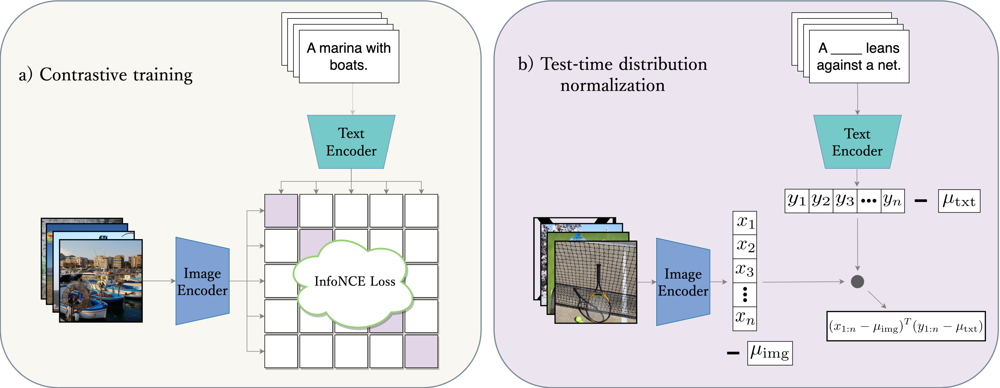

Abstract
Advances in the field of visual-language contrastive learning have made it possible for many downstream applications to be carried out efficiently and accurately by simply taking the dot product between image and text representations. One of the most representative approaches proposed recently known as CLIP (Radford et al., 2021) has quickly garnered widespread adoption due to its effectiveness. CLIP is trained with an InfoNCE loss that takes into account both positive and negative samples to help learn a much more robust representation space. This paper however reveals that the common downstream practice of taking a dot product is only a zeroth-order approximation of the optimization goal, resulting in a loss of information during test-time. Intuitively, since the model has been optimized based on the InfoNCE loss, test-time procedures should ideally also be in alignment. The question lies in how one can retrieve any semblance of negative samples information during inference. We propose Distribution Normalization (DN), where we approximate the mean representation of a batch of test samples and use such a mean to represent what would be analogous to negative samples in the InfoNCE loss. DN requires no retraining or fine-tuning and can be effortlessly applied during inference. Extensive experiments on a wide variety of downstream tasks exhibit a clear advantage of DN over the dot product. Our code is available at https://github.com/fengyuli-dev/distribution-normalization.
Authors
* indicates equal contribution.
Citation
Need change after we update paper version on arXiv.
@misc{zhou2023distribution,
title={Distribution Normalization: An "Effortless" Test-Time Augmentation for Contrastively Learned Visual-language Models},
author={Yifei Zhou and Juntao Ren and Fengyu Li and Ramin Zabih and Ser-Nam Lim},
year={2023},
eprint={2302.11084},
archivePrefix={arXiv},
primaryClass={cs.LG}
}